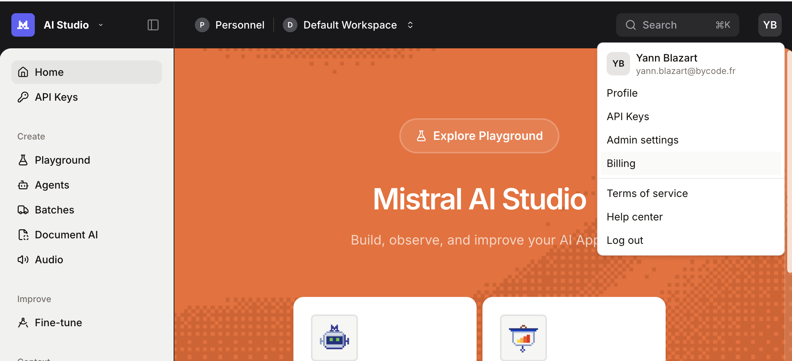
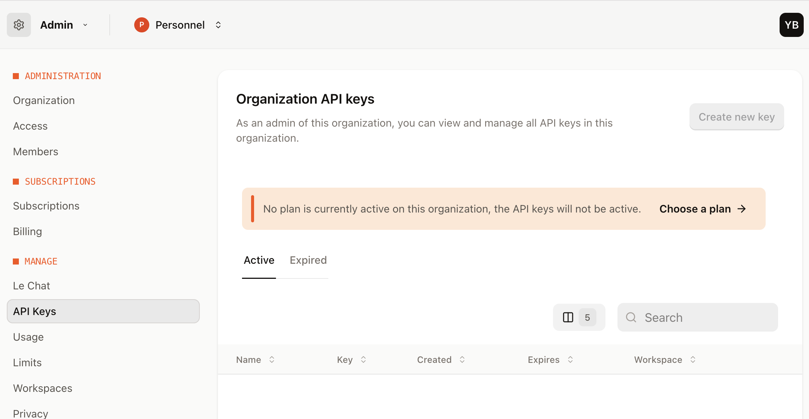
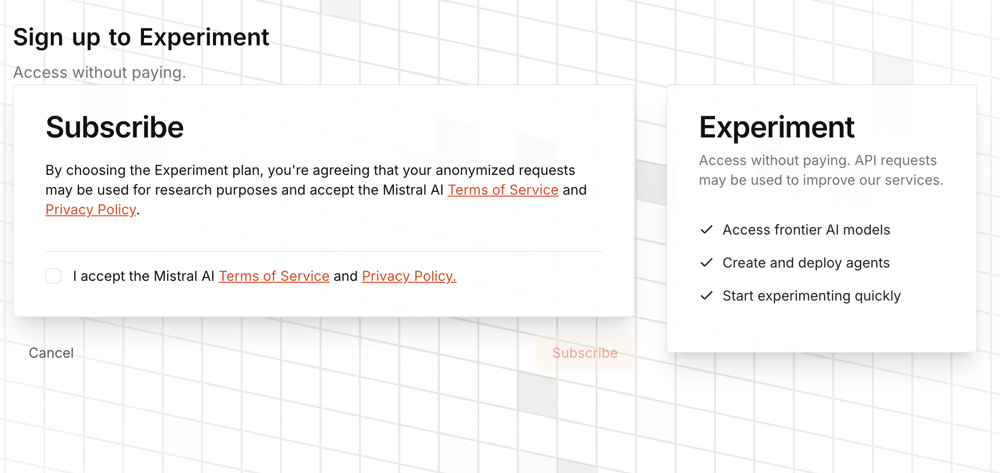
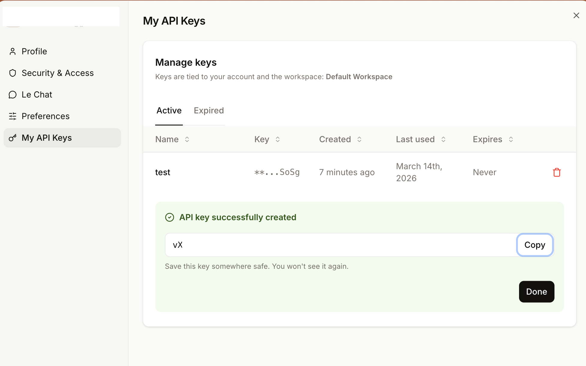
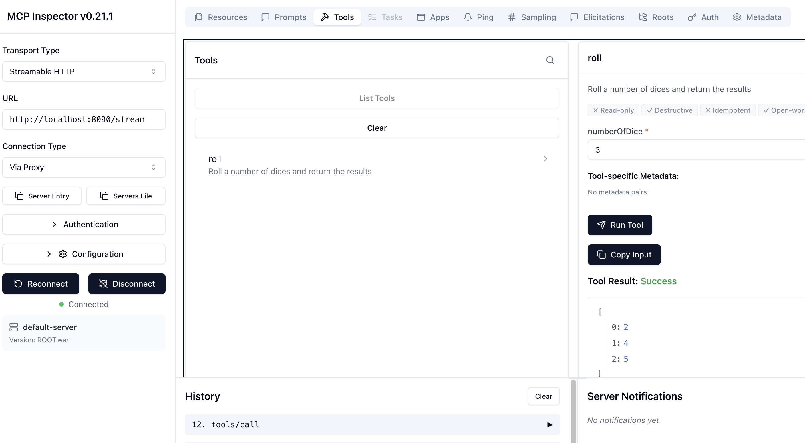

LangChain4j-CDI
IA générative nativement injectable dans Jakarta EE — Construisez des agents IA prêts pour la production avec CDI, MicroProfile et LangChain4j sur WildFly.


Ce que vous allez construire
Dans cet atelier pratique, vous allez progressivement construire trois applications alimentées par l'IA en utilisant LangChain4j-CDI, transformant des interfaces Jakarta EE en agents IA injectables avec une seule annotation.
Exercice 1 : Agent IA
Créez un skald viking injectable avec @RegisterAIService, des réponses en streaming et de la vision multimodale.
Exercice 2 : Résilience et observabilité
Ajoutez MicroProfile Fault Tolerance (@Retry, @Timeout, @CircuitBreaker) et OpenTelemetry.
Exercice 3 : Intégration MCP
Connectez votre agent IA à des outils externes via le Model Context Protocol (MCP) — « JDBC pour l'IA ».
Exercice 4 : Guardrails
Ajoutez des garde-fous sur l'entrée et la sortie de votre skald viking : langue française obligatoire et sans races fantastiques.
Chaque exercice dispose d'un module base/ (squelette avec TODOs) et d'un module solution/ (référence complète). Travaillez dans base/ et suivez les étapes. Si vous êtes bloqué, la solution/ est toujours là comme filet de sécurité.
Prérequis
Logiciels requis
| Outil | Version | Utilité |
|---|---|---|
| JDK | 21+ | Développement Java |
| Maven | 3.9+ | Outil de build |
| IDE | Apache NetBeans / IntelliJ IDEA / VS Code | Éditeur de code |
| curl | n'importe quelle | Test d'API |
| Clé API Mistral AI | — | Fournisseur LLM (niveau gratuit disponible) |
| Docker / Podman | n'importe quelle | Stack Grafana LGTM (Exercice 2 uniquement) |
1. Récupérer le code source
git clone https://github.com/yblazart/confs-langchain4j-cdi-javaone2026.git
cd confs-langchain4j-cdi-javaone2026/demo-project2. Configurer Mistral AI
Inscrivez-vous sur console.mistral.ai et suivez ces étapes pour obtenir une clé API gratuite :
Étape 1 : Accéder aux clés API
Depuis la page d'accueil de Mistral AI Studio, cliquez sur l'icône de votre profil (coin supérieur droit), puis sélectionnez API Keys.

Étape 2 : Choisir un forfait
Sur la page API Keys, vous verrez un avertissement : "No plan is currently active on this organization, the API keys will not be active." Cliquez sur Choose a plan pour activer vos clés.

Sans forfait actif, vos clés API seront créées mais ne fonctionneront pas. Vous obtiendrez une erreur Unauthorized lors de l'appel de l'API.
Étape 3 : Sélectionner le forfait gratuit "Experiment"
Choisissez le forfait Experiment (côté gauche) — il est complètement gratuit et vous donne accès à tous les modèles d'IA de pointe. Cliquez sur "Experiment for free".

Étape 4 : Accepter les conditions et s'abonner
Cochez la case pour accepter les conditions d'utilisation et la politique de confidentialité, puis cliquez sur Subscribe.

Il vous sera ensuite demandé de fournir votre numéro de téléphone pour recevoir un code d'activation par SMS. Ceci est requis pour activer le forfait gratuit Experiment.
Étape 5 : Créer et exporter votre clé API
Une fois votre forfait activé, retournez sur la page API Keys et cliquez sur "Create new key". Copiez la clé immédiatement — vous ne pourrez plus la revoir.

Puis exportez-la dans votre terminal :
# Linux / macOS
export MISTRAL_API_KEY=your-api-key-here
# Windows (PowerShell)
$env:MISTRAL_API_KEY="your-api-key-here"Si vous préférez exécuter les modèles en local, installez Ollama et téléchargez un modèle : ollama pull qwen2.5:7b. Vous devrez ajuster le fichier microprofile-config.properties pour utiliser OllamaChatModel au lieu de MistralAiChatModel.
3. WildFly (automatique)
WildFly 39 est automatiquement téléchargé et provisionné par le plugin Maven. Aucune installation manuelle nécessaire :
# This downloads WildFly, starts it, and deploys the app
cd demo-1-ai-agent/solution
mvn clean wildfly:devL'objectif wildfly:dev est votre meilleur ami — il recharge à chaud à chaque mvn package.
4. Vérifier votre installation
# Build all modules to download dependencies
cd demo-project
mvn clean install -DskipTests
# Quick smoke test
cd demo-1-ai-agent/solution
mvn clean wildfly:dev
# In another terminal:
curl -X POST -H "Content-Type: text/plain" \
-d "Sing me a heroic song" \
http://localhost:8080/demo-1/api/chatSi vous obtenez une réponse du skald viking IA, votre environnement est correctement configuré. Arrêtez le serveur (Ctrl+C) et passez aux exercices.
Vue d'ensemble de l'architecture
LangChain4j-CDI est une extension CDI qui fait le pont entre LangChain4j (le framework IA Java) et les serveurs Jakarta EE / MicroProfile. Elle transforme des interfaces annotées en agents IA injectables.
Comment ça fonctionne
L'extension CDI scanne les interfaces @RegisterAIService au démarrage
Pour chaque interface : chatModelName, tools, chatMemoryProviderName, contentRetrieverName
Un proxy LangChain4j est enveloppé dans un bean CDI géré
Le SPI LLMConfig lit depuis MicroProfile Config : dev.langchain4j.cdi.plugin.<name>.class=...
@Inject Assistant assistant; — ça fonctionne tout simplement
L'avant / après
Sans CDI (verbeux)
ChatLanguageModel model =
MistralAiChatModel.builder()
.apiKey(System.getenv("MISTRAL_API_KEY"))
.modelName("pixtral-large-latest")
.temperature(0.3)
.maxTokens(1000)
.build();
ChatMemory memory =
MessageWindowChatMemory.builder()
.maxMessages(20).build();
Assistant assistant =
AiServices.builder(Assistant.class)
.chatLanguageModel(model)
.chatMemory(memory)
.tools(new VikingTools())
.build();Avec CDI (propre)
@RegisterAIService(
chatModelName = "my-model",
tools = VikingTools.class)
public interface Assistant {
@SystemMessage("You are a
Viking expedition guide")
String chat(
@UserMessage String message);
}
// In your REST endpoint:
@Inject
Assistant assistant;Double support d'extension CDI
LangChain4j-CDI fournit les deux types d'extensions, donc ça fonctionne sur n'importe quel serveur CDI :
| Type d'extension | Traitement | Serveurs |
|---|---|---|
| Portable Extension | Runtime | WildFly, Payara, GlassFish, Liberty |
| Build Compatible Extension | Compile-time | Quarkus, Helidon |
Structure du projet
├── pom.xml ← Parent POM (centralized versions)
├── demo-1-ai-agent/ ← Injectable AI Agent
│ ├── base/ ← Skeleton with TODOs (your workspace)
│ └── solution/ ← Complete reference
├── demo-2-ft-telemetry/ ← Memory + RAG + Tools + FT + Telemetry
│ ├── base/
│ └── solution/
├── demo-3-mcp/ ← MCP Integration
│ ├── mcp-server/ ← Standalone MCP server (fat JAR)
│ ├── base/
│ └── solution/
└── demo-4-guardrails/ ← Input & Output Guardrails
├── base/ ← Squelette avec TODOs (votre espace de travail)
└── solution/
Diapositives de présentation
L'atelier comprend un jeu de diapositives Reveal.js couvrant la théorie derrière chaque exercice. Voici ce que couvre chaque section.
Depuis la racine du projet : cd slides && python3 -m http.server 8000, puis ouvrez http://localhost:8000. Appuyez sur S pour les notes du présentateur, F pour le plein écran, O pour la vue d'ensemble.
Introduction et contexte
La présentation commence par l'énoncé du problème : LangChain4j fonctionne très bien avec Quarkus, mais les entreprises utilisent WildFly, Payara, Liberty, GlassFish, Helidon. La réponse : @RegisterAIService — « Injectez un agent IA aussi naturellement qu'un EntityManager ».
Internes de l'extension CDI
Plongée approfondie dans la façon dont l'extension CDI scanne @RegisterAIService, crée des beans synthétiques, résout les composants via le SPI LLMConfig et fait le pont vers MicroProfile Config. Couvre à la fois les extensions Portable et Build Compatible.
Fonctionnalités progressives
- Mémoire de conversation :
@MemoryId+ChatMemoryProviderpour l'état par session - RAG :
contentRetrieverNameavec embeddings et vector stores - Outils / Function Calling : beans CDI avec méthodes
@Tool— la fonctionnalité majeure - MCP : Model Context Protocol via
toolProviderName— « JDBC pour l'IA »
Prêt pour la production
- MicroProfile Fault Tolerance :
@Retry,@Timeout,@Fallback,@CircuitBreaker - MicroProfile Telemetry : traces et métriques OpenTelemetry avec Grafana LGTM
- Modules LangChain4j-CDI : core, portable-ext, build-compatible-ext, fault-tolerance, telemetry
- A2A (Agent-to-Agent) : aperçu du prochain protocole pour la communication inter-agents
Exercice 1 : Agent IA injectable
Message clé : « De 15 lignes de code passe-partout à 1 annotation + 1 propriété de configuration »
Créez un chatbot IA simple en utilisant @RegisterAIService, injectez-le dans un point d'accès JAX-RS et testez-le. Ensuite, ajoutez des capacités de streaming et de vision multimodale.
cd demo-project/demo-1-ai-agent/base
# Open this directory in your IDEFichiers clés
| Fichier | Utilité |
|---|---|
ChatAssistant.java | Interface du service IA (votre tâche principale) |
ChatAssistantStreaming.java | Service IA en streaming |
ChatResource.java | Point d'accès REST JAX-RS |
ImageAnalyzerServlet.java | Servlet de vision multimodale |
microprofile-config.properties | Configuration LLM |
Ouvrez ChatAssistant.java. C'est une interface Java simple. Votre tâche : la transformer en agent IA injectable.
Ajouter @RegisterAIService
@RegisterAIService(chatModelName = "my-model")
public interface ChatAssistant {
@SystemMessage("""
You are a Viking skald (bard) entertaining warriors in a great hall.
You tell epic tales, sing heroic songs, compose witty verses about
battles, voyages, and the glorious chaos of Viking life.
Your style is bold, dramatic, and full of Norse spirit.
""")
String chat(@UserMessage String userMessage);
}@RegisterAIServiceindique à l'extension CDI de créer un bean injectable pour cette interfacechatModelName = "my-model"fait référence à la configuration du modèle dansmicroprofile-config.properties@SystemMessagedéfinit la personnalité et le comportement de l'IA@UserMessagemarque le paramètre comme entrée utilisateur
Ouvrez ChatResource.java. Injectez le service IA et appelez-le :
@Path("/chat")
@ApplicationScoped
public class ChatResource {
@Inject
ChatAssistant assistant; // CDI injection!
@POST
@Consumes(MediaType.TEXT_PLAIN)
@Produces(MediaType.TEXT_PLAIN)
public String chat(String message) {
return assistant.chat(message);
}
}Le code métier n'a aucune dépendance sur LangChain4j. Le seul import est votre propre interface. Changer de framework IA demain ? Changez l'implémentation, pas le code métier.
Ouvrez src/main/resources/META-INF/microprofile-config.properties et décommentez/ajoutez la configuration du modèle :
# Chat model (Mistral AI)
dev.langchain4j.cdi.plugin.my-model.class=\
dev.langchain4j.model.mistralai.MistralAiChatModel
dev.langchain4j.cdi.plugin.my-model.config.api-key=${MISTRAL_API_KEY}
dev.langchain4j.cdi.plugin.my-model.config.model-name=mistral-small-latest
dev.langchain4j.cdi.plugin.my-model.config.temperature=0.9Les propriétés du builder doivent utiliser le préfixe .config. : dev.langchain4j.cdi.plugin.<name>.config.<prop>=value. Sans .config., la propriété est ignorée silencieusement.
Déployer et tester
mvn clean wildfly:dev# In another terminal:
curl -X POST -H "Content-Type: text/plain" \
-d "Tell me a saga about Java developers on a Viking voyage" \
http://localhost:8080/demo-1/api/chatOuvrez ChatAssistantStreaming.java et créez un service IA en streaming :
@RegisterAIService(streamingChatModelName = "my-streaming-model")
public interface ChatAssistantStreaming {
@SystemMessage("You are a Viking storyteller in a great hall...")
TokenStream chatStream(@UserMessage String userMessage);
}Then in ChatResource.java, add the SSE endpoint:
@Inject
ChatAssistantStreaming streamingAssistant;
@GET
@Path("/stream")
@Produces(MediaType.SERVER_SENT_EVENTS)
public void chatStream(@QueryParam("message") String message,
@Context SseEventSink sink, @Context Sse sse) {
TokenStream tokenStream = streamingAssistant.chatStream(message);
tokenStream
.onPartialResponse(token ->
sink.send(sse.newEvent("token", token)))
.onCompleteResponse(resp -> {
sink.send(sse.newEvent("done", ""));
sink.close();
})
.onError(error -> {
sink.send(sse.newEvent("error", error.getMessage()));
sink.close();
})
.start();
}Add the streaming model config in microprofile-config.properties:
dev.langchain4j.cdi.plugin.my-streaming-model.class=\
dev.langchain4j.model.mistralai.MistralAiStreamingChatModel
dev.langchain4j.cdi.plugin.my-streaming-model.config.api-key=${MISTRAL_API_KEY}
dev.langchain4j.cdi.plugin.my-streaming-model.config.model-name=mistral-small-latestOuvrez ImageAnalyzerServlet.java et injectez un modèle de vision :
@WebServlet("/uploadServlet")
@MultipartConfig
public class ImageAnalyzerServlet extends HttpServlet {
@Inject
@Named("vision-model")
ChatModel visionModel;
@Override
protected void doPost(HttpServletRequest request,
HttpServletResponse response) throws ... {
Part file = request.getPart("file");
UserMessage userMessage = UserMessage.from(
TextContent.from("Describe this image in detail"),
ImageContent.from(encodeBase64(file.getInputStream()),
file.getContentType())
);
ChatResponse answer = visionModel.chat(userMessage);
response.getWriter().write(answer.aiMessage().text());
}
}And the vision model config:
dev.langchain4j.cdi.plugin.vision-model.class=\
dev.langchain4j.model.mistralai.MistralAiChatModel
dev.langchain4j.cdi.plugin.vision-model.config.api-key=${MISTRAL_API_KEY}
dev.langchain4j.cdi.plugin.vision-model.config.model-name=pixtral-large-latest# Chat standard
curl -X POST -H "Content-Type: text/plain" \
-d "What is CDI in 2 sentences?" \
http://localhost:8080/demo-1/api/chat
# Streaming (ouvrir dans le navigateur)
# http://localhost:8080/demo-1/stream.html
# Analyse d'image (ouvrir dans le navigateur)
# http://localhost:8080/demo-1/image.html
# Vérification de santé
curl http://localhost:8080/demo-1/api/chat/health- Le chat standard renvoie une réponse du skald viking
- Le streaming affiche les tokens arrivant en temps réel
- Le téléchargement d'image renvoie une description générée par l'IA
Passez à la solution : cd ../solution && mvn clean wildfly:dev
Exercice 2 : Tolérance aux pannes et télémétrie
Message clé : « Les annotations MicroProfile fonctionnent sur les services IA parce qu'ils sont des beans CDI »
Commencez avec un guide d'expéditions viking fonctionnel qui possède déjà la mémoire, RAG et des outils. Votre tâche : ajouter des annotations MicroProfile Fault Tolerance pour le rendre prêt pour la production, puis l'observer avec OpenTelemetry.
cd demo-project/demo-2-ft-telemetry/base
mvn clean wildfly:devCe qui fonctionne déjà
Le module base est pré-câblé avec ces fonctionnalités :
Mémoire de conversation
@MemoryId fournit une mémoire par session via ChatMemoryProviderBean. Chaque onglet du navigateur obtient sa propre conversation.
RAG
ExpeditionDetailsProvider ingeste les données d'expéditions viking dans un vector store en mémoire en utilisant les embeddings Mistral.
Outils
VikingTools est un bean CDI avec 5 méthodes @Tool : lister expéditions, enrôler guerrier, annuler, vérifier disponibilité, voir enrôlements.
Testez que tout fonctionne avant d'ajouter la tolérance aux pannes :
curl -X POST -H "Content-Type: text/plain" \
-H "X-Session-Id: test-123" \
-d "What expeditions are available?" \
http://localhost:8080/demo-2/api/chatOpen ChatAssistant.java. The AI service interface already has @RegisterAIService with memory, RAG, and tools. Add the @Retry annotation:
import org.eclipse.microprofile.faulttolerance.Retry;
@RegisterAIService(chatModelName = "my-model",
chatMemoryProviderName = "my-memory",
contentRetrieverName = "my-rag",
tools = VikingTools.class)
public interface ChatAssistant {
@Retry(maxRetries = 3, delay = 1000)
String chat(@MemoryId String sessionId,
@UserMessage String message);
}Because @RegisterAIService creates a CDI bean, all MicroProfile interceptors apply. The CDI container wraps the proxy with the Fault Tolerance interceptor — no glue code needed.
Stack the Fault Tolerance annotations:
import org.eclipse.microprofile.faulttolerance.*;
import java.time.temporal.ChronoUnit;
@RegisterAIService(chatModelName = "my-model",
chatMemoryProviderName = "my-memory",
contentRetrieverName = "my-rag",
tools = VikingTools.class)
public interface ChatAssistant {
@Retry(maxRetries = 3, delay = 1000)
@Timeout(value = 30, unit = ChronoUnit.SECONDS)
@Fallback(fallbackMethod = "chatFallback")
String chat(@MemoryId String sessionId,
@UserMessage String message);
default String chatFallback(String sessionId, String message) {
return "I'm sorry, our AI service is temporarily unavailable. "
+ "Please try again in a moment. "
+ "Our team has been notified.";
}
}Add the final piece — the circuit breaker prevents flooding a failing service:
@Retry(maxRetries = 3, delay = 1000)
@Timeout(value = 30, unit = ChronoUnit.SECONDS)
@Fallback(fallbackMethod = "chatFallback")
@CircuitBreaker(requestVolumeThreshold = 5, failureRatio = 0.5)
String chat(@MemoryId String sessionId,
@UserMessage String message);Hot-reload: save and run mvn package (or let your IDE auto-build).
Simulate a failure: temporarily change the API key to an invalid value, then send requests. You should see retries, then the fallback message. Restore the key and the circuit breaker recovers automatically.
Start the Grafana LGTM stack (Loki + Grafana + Tempo + Mimir):
# Start the observability stack
podman run -p 3000:3000 -p 4317:4317 -p 4318:4318 \
--rm -ti grafana/otel-lgtmThe telemetry configuration is already in microprofile-config.properties:
# OpenTelemetry
otel.exporter.otlp.endpoint=http://localhost:4318
otel.service.name=demo-2-langchain4j-cdi
otel.traces.exporter=otlp
otel.metrics.exporter=otlp
# LangChain4j-CDI Telemetry Listeners
dev.langchain4j.cdi.plugin.my-model.config.listeners=\
dev.langchain4j.cdi.telemetry.SpanChatModelListener,\
dev.langchain4j.cdi.telemetry.MetricsChatModelListenerSend a few chat requests, then open http://localhost:3000 (Grafana). Navigate to Explore → Tempo and search for service demo-2-langchain4j-cdi.
You will see distributed traces showing:
- LLM call latency
- Token counts (in/out)
- Tool calls and their durations
- RAG retrieval steps
# Chat with session
curl -X POST -H "Content-Type: text/plain" \
-H "X-Session-Id: test-456" \
-d "What expeditions are available?" \
http://localhost:8080/demo-2/api/chat
# Enroll a warrior
curl -X POST -H "Content-Type: text/plain" \
-H "X-Session-Id: test-456" \
-d "Enroll Erik Bloodaxe for the first expedition" \
http://localhost:8080/demo-2/api/chat
# Inspect memory
curl "http://localhost:8080/demo-2/api/chat/memory?sessionId=test-456"- Memory retains context across messages in the same session
- RAG retrieves relevant expedition information
- Tools execute enrollments, cancellations, and queries
- Fallback responds gracefully when the AI is unavailable
- Traces appear in Grafana/Tempo
Exercise 3: MCP Integration
Key message: "MCP is JDBC for AI — your agents talk to any tool server"
Connect an AI agent to an external MCP (Model Context Protocol) server. The MCP server provides dice-rolling tools, and your AI agent plays a Viking dice game (Orlog) via the protocol.
What is MCP?
The Model Context Protocol is an open standard for connecting AI agents to external tools. Think of it as a universal adapter: one protocol, any tool server, any language.
@RegisterAIService toolProviderName JSON-RPC via HTTP SSE
First, build and start the external MCP dice server:
# Build the MCP server
cd demo-project/demo-3-mcp/mcp-server
mvn clean package
# Start it (runs on port 8090)
java -jar target/mcp-server-1.0-SNAPSHOT-jar-with-dependencies.jarThe MCP server exposes a roll tool that generates random dice results for the Viking game. It communicates via HTTP SSE (Server-Sent Events) with JSON-RPC 2.0.
Leave the MCP server running in a separate terminal. The AI agent will connect to it via HTTP SSE on localhost:8090/sse.
Test with MCP Inspector
Before wiring the MCP server into the AI agent, you can verify it works using the MCP Inspector — a visual debugging tool for MCP servers. In a new terminal:
# From the demo-3-mcp directory
cd demo-project/demo-3-mcp
./run-mcp-inspector.shThis opens a web UI (usually at http://localhost:6274) connected to your MCP server. Click on the Tools tab, then on the roll tool to inspect it and test it interactively:

- The connection status shows Connected
- The
rolltool appears in the Tools list - Set
numberOfDiceto2, click Run Tool, and verify you get dice results back
Open VikingGameMasterAI.java in demo-3-mcp/base/:
@RegisterAIService(chatModelName = "mistral",
toolProviderName = "mcp")
public interface VikingGameMasterAI {
@SystemMessage("""
You are Ragnar the Wise, master of Orlog in the great Viking hall.
You run the sacred Viking dice game Orlog.
RULES: Roll 2 dice. Use the roll tool with numberOfDice=2.
- 7 or 11 on first roll = VICTORY in Odin's favor
- 2, 3, or 12 on first roll = DEFEAT by the Norns
- Any other = that is your fate number
REQUIRED FORMAT:
DICE: [X, Y]
TOTAL: [sum]
RESULT: [what happened in Viking terms]
""")
String play(@UserMessage String playerAction);
}toolProviderName = "mcp" connects this agent to the McpToolProvider bean, which automatically discovers dice-rolling tools from the external MCP server for the Viking Orlog game.
Open microprofile-config.properties and uncomment the MCP configuration:
# Chat Model (Mistral AI)
dev.langchain4j.cdi.plugin.mistral.class=\
dev.langchain4j.model.mistralai.MistralAiChatModel
dev.langchain4j.cdi.plugin.mistral.config.api-key=${MISTRAL_API_KEY}
dev.langchain4j.cdi.plugin.mistral.config.model-name=mistral-small-latest
# MCP Transport (SSE to Viking dice server)
dev.langchain4j.cdi.plugin.ssetransport.class=\
dev.langchain4j.mcp.client.transport.http.HttpMcpTransport
dev.langchain4j.cdi.plugin.ssetransport.config.sseUrl=\
http://localhost:8090/sse
# MCP Client
dev.langchain4j.cdi.plugin.mcpclient.class=\
dev.langchain4j.mcp.client.DefaultMcpClient
dev.langchain4j.cdi.plugin.mcpclient.config.transport=lookup:@ssetransport
# MCP Tool Provider
dev.langchain4j.cdi.plugin.mcp.class=\
dev.langchain4j.mcp.McpToolProvider
dev.langchain4j.cdi.plugin.mcp.config.mcpClients=lookup:@mcpclientlookup:@ssetransport references another CDI bean by its config name. This is how you wire beans together purely through configuration — no Java code needed for the plumbing.
Open GameResource.java:
@Path("/game")
@ApplicationScoped
public class GameResource {
@Inject
VikingGameMasterAI gameMaster;
@POST
@Path("/play")
@Consumes(MediaType.TEXT_PLAIN)
@Produces(MediaType.TEXT_PLAIN)
public String play(String playerAction) {
return gameMaster.play(playerAction);
}
@GET
@Path("/start")
@Produces(MediaType.TEXT_PLAIN)
public String start() {
return gameMaster.play(
"Hail! I wish to play Orlog with you.");
}
}# Make sure the MCP server is running on port 8090!
# Deploy
cd demo-project/demo-3-mcp/base
mvn clean wildfly:dev
# Start a game
curl http://localhost:8080/demo-3/api/game/start
# Roll the dice
curl -X POST -H "Content-Type: text/plain" \
-d "Cast the bones of fate!" \
http://localhost:8080/demo-3/api/game/play
# Open the web UI
# http://localhost:8080/demo-3/- The AI agent calls the MCP server's
rolltool via HTTP SSE - Dice results are returned in the DICE: [X, Y] format
- Ragnar the Wise announces victories, defeats, and fate numbers with Viking spirit
- The web UI renders visual dice with animated pips
You have built three AI-powered applications using LangChain4j-CDI: a Viking skald, a resilient expedition guide, and an MCP-integrated Viking dice game. All using standard Jakarta EE patterns.
Exercice 4 : Guardrails — Garde-fous pour votre agent
Message clé : « Les guardrails sont des beans CDI — ils bénéficient de l'injection de dépendances comme tous vos composants »
Ajoutez quatre guardrails autour de votre skald viking : deux sur l'entrée (valider la requête avant d'appeler le LLM) et deux sur la sortie (valider la réponse avant de la renvoyer). L'agent n'accepte que le français et refuse toute mention de races fantastiques.
cd demo-project/demo-4-guardrails/base
# Ouvrir ce répertoire dans votre IDEConcept : InputGuardrail vs OutputGuardrail
InputGuardrail
S'exécute avant d'appeler le LLM. Si le guardrail échoue, le LLM n'est jamais appelé — économie de temps et de tokens.
InputGuardrailResult validate(
UserMessage userMessage)OutputGuardrail
S'exécute après la réponse du LLM. Si le guardrail échoue, une exception est levée — le code appelant doit la gérer.
OutputGuardrailResult validate(
AiMessage responseFromLLM)Fichiers clés
| Fichier | Rôle | TODO |
|---|---|---|
SkaldAssistant.java | Interface du service IA | Ajouter @RegisterAIService avec les noms de guardrails |
FrenchInputGuardrail.java | Vérifie que la requête est en français | Nommer, initialiser, implémenter |
FrenchOutputGuardrail.java | Vérifie que le chant est en français | Nommer, initialiser, implémenter |
NoFantasyRacesInputGuardrail.java | Rejette les mentions de nains/elfes en entrée | Nommer, implémenter |
NoFantasyRacesOutputGuardrail.java | Rejette les mentions de nains/elfes en sortie | Nommer, implémenter |
ChatResource.java | Point d'accès REST (déjà câblé) | Rien — gère déjà les exceptions guardrail |
Cet exercice utilise Mistral AI (comme l'exercice 1). Assurez-vous que MISTRAL_API_KEY est exporté dans votre terminal.
@Named
Les guardrails sont des beans CDI référencés par leur nom dans @RegisterAIService. Ajoutez @Named sur chaque classe de guardrail.
FrenchInputGuardrail.java
import jakarta.inject.Named;
@ApplicationScoped
@Named("french-input") // ← Ajouter cette annotation
public class FrenchInputGuardrail implements InputGuardrail {
// ...
}FrenchOutputGuardrail.java
@ApplicationScoped
@Named("french-output")
public class FrenchOutputGuardrail implements OutputGuardrail {
// ...
}NoFantasyRacesInputGuardrail.java
@ApplicationScoped
@Named("fantasy-input")
public class NoFantasyRacesInputGuardrail implements InputGuardrail {
// ...
}NoFantasyRacesOutputGuardrail.java
@ApplicationScoped
@Named("fantasy-output")
public class NoFantasyRacesOutputGuardrail implements OutputGuardrail {
// ...
}LangChain4j-CDI résout les guardrails par leur nom CDI au moment du démarrage. Le nom dans @Named("...") doit correspondre exactement aux chaînes dans inputGuardrailNames et outputGuardrailNames.
Les guardrails de langue (FrenchInputGuardrail et FrenchOutputGuardrail) utilisent Apache Tika pour détecter automatiquement la langue d'un texte. Initialisez le détecteur dans @PostConstruct :
import org.apache.tika.langdetect.optimaize.OptimaizeLangDetector;
import org.apache.tika.language.detect.LanguageDetector;
@ApplicationScoped
@Named("french-input")
public class FrenchInputGuardrail implements InputGuardrail {
private LanguageDetector detector;
@PostConstruct
void init() {
detector = new OptimaizeLangDetector().loadModels();
// ↑ Charge les modèles de détection de langue depuis le classpath
}
// ...
}Faites de même dans FrenchOutputGuardrail.
Le bean est @ApplicationScoped : une seule instance partagée entre toutes les requêtes. Le LanguageDetector d'Apache Tika n'est pas thread-safe — vous devrez utiliser synchronized (detector) { ... } lors de la détection.
validate()
FrenchInputGuardrail — accepter uniquement le français
@Override
public InputGuardrailResult validate(UserMessage userMessage) {
String text = userMessage.singleText();
LanguageResult result;
synchronized (detector) {
result = detector.detect(text);
}
// Benefit of the doubt : si Tika n'est pas sûr (texte trop court), on laisse passer
if (result.isReasonablyCertain() && !"fr".equals(result.getLanguage())) {
return failure("Seul le français est accepté ! Parlez français pour invoquer le skald.");
}
return success();
}FrenchOutputGuardrail — vérifier que le chant est en français
@Override
public OutputGuardrailResult validate(AiMessage responseFromLLM) {
String text = responseFromLLM.text();
LanguageResult result;
synchronized (detector) {
result = detector.detect(text);
}
// Pour la sortie, on est strict : si pas certain ou pas français → échec
if (!result.isReasonablyCertain() || !"fr".equals(result.getLanguage())) {
return failure("Le chant doit être en français ! Le skald doit chanter dans la langue de Molière.");
}
return success();
}Pour l'entrée : on applique le benefit of the doubt — un seul mot comme « Odin » n'est pas détectable avec certitude, donc on accepte. Pour la sortie : le chant est long, Tika est fiable — on rejette si non certain ou si ce n'est pas du français.
NoFantasyRacesInputGuardrail — rejeter les mots interdits en entrée
private static final Set<String> FORBIDDEN_WORDS =
Set.of("nain", "nains", "elfe", "elf", "elfes");
@Override
public InputGuardrailResult validate(UserMessage userMessage) {
String text = userMessage.singleText().toLowerCase();
for (String word : FORBIDDEN_WORDS) {
if (text.contains(word)) {
return failure("Les Vikings ne connaissent ni les nains ni les elfes ! "
+ "Gardez votre requête purement nordique.");
}
}
return success();
}NoFantasyRacesOutputGuardrail — rejeter les mots interdits en sortie
@Override
public OutputGuardrailResult validate(AiMessage responseFromLLM) {
String text = responseFromLLM.text().toLowerCase();
for (String word : FORBIDDEN_WORDS) {
if (text.contains(word)) {
return failure("Le chant du skald ne doit pas évoquer les nains ni les elfes ! "
+ "C'est une saga viking pure.");
}
}
return success();
}@RegisterAIService
Ouvrez SkaldAssistant.java et décommentez / remplacez le TODO par l'annotation complète :
import dev.langchain4j.cdi.RegisterAIService;
import dev.langchain4j.service.SystemMessage;
import dev.langchain4j.service.UserMessage;
@RegisterAIService(
chatModelName = "my-model",
inputGuardrailNames = {"french-input", "fantasy-input"},
outputGuardrailNames = {"french-output", "fantasy-output"})
public interface SkaldAssistant {
@SystemMessage("""
Tu es un skald viking qui compose des chants épiques en FRANÇAIS.
Le chant doit célébrer les thèmes nordiques héroïques : batailles, raids,
Valhalla, Thor, Odin, drakkars.
Format : 3-4 couplets avec un refrain puissant.
Ton : épique, héroïque, guerrier.
""")
String composeSong(@UserMessage String request);
}Les guardrails sont exécutés dans l'ordre des tableaux. Ici, french-input est évalué avant fantasy-input. Si le premier échoue, le second n'est pas évalué. Le LLM n'est appelé que si tous les guardrails d'entrée passent.
Déployer
mvn clean wildfly:devLe fichier microprofile-config.properties est déjà configuré avec le modèle Mistral AI. Assurez-vous que MISTRAL_API_KEY est défini dans votre environnement.
Via curl
# ✅ Requête valide en français
curl -X POST -H "Content-Type: text/plain" \
-d "Compose un chant sur la gloire d'Odin et les batailles vikings" \
http://localhost:8080/demo-4/api/song
# ❌ InputGuardrail langue : requête en anglais rejetée
curl -X POST -H "Content-Type: text/plain" \
-d "Sing me a heroic Viking song about Odin" \
http://localhost:8080/demo-4/api/song
# ❌ InputGuardrail races : mention de nains rejetée
curl -X POST -H "Content-Type: text/plain" \
-d "Compose un chant sur les nains qui forgeaient des armes vikings" \
http://localhost:8080/demo-4/api/song
# Vérification santé
curl http://localhost:8080/demo-4/api/song/healthVia l'interface web
Ouvrez http://localhost:8080/demo-4/ pour accéder à l'interface interactive qui affiche les guardrails actifs et leurs messages d'erreur.
- Une requête en français sur un thème nordique produit un chant épique
- Une requête en anglais retourne « Seul le français est accepté ! »
- Une requête mentionnant des nains ou des elfes est rejetée
- Un seul mot ambigu comme « Odin » passe (benefit of the doubt)
- Le code HTTP 400 est retourné avec le message du guardrail qui a échoué
Passez à la solution : cd ../solution && mvn clean wildfly:dev
Vous avez construit quatre applications alimentées par l'IA avec LangChain4j-CDI : un skald viking, un guide d'expéditions résilient, un jeu de dés avec MCP, et maintenant un skald avec guardrails. Tous avec les patterns Jakarta EE que vous connaissez déjà.
Et après ?
A2A : Protocole Agent-to-Agent
MCP connecte les agents aux outils. A2A connecte les agents entre eux. Imaginez votre agent Jakarta EE déléguant des tâches à d'autres agents spécialisés, chacun tournant sur son propre serveur.
Modules LangChain4j-CDI
| Module | Artefact | Utilité |
|---|---|---|
| core | langchain4j-cdi-core | API + annotations |
| portable | langchain4j-cdi-portable-ext | WildFly, Payara, GlassFish, Liberty |
| build | langchain4j-cdi-build-compatible-ext | Quarkus, Helidon |
| config | langchain4j-cdi-config | MicroProfile Config SPI |
| FT | langchain4j-cdi-fault-tolerance | Retry, Timeout, CircuitBreaker |
| telemetry | langchain4j-cdi-telemetry | Spans et métriques OpenTelemetry |
Ressources
Dépannage
| Problème | Cause | Solution |
|---|---|---|
ClassNotFoundException: ...faulttolerance.Retry |
Couches Galleon manquantes | Ajouter microprofile-fault-tolerance dans <layers> |
| Propriétés ignorées silencieusement | Préfixe .config. manquant |
Utiliser ...plugin.X.config.prop=val |
| La mémoire se réinitialise à chaque message | get() crée une nouvelle instance |
Utiliser computeIfAbsent() dans le provider |
ChatMessage.text() ne compile pas |
ChatMessage n'a pas de text() |
Pattern-match : SystemMessage, UserMessage, etc. |
| 404 sur la racine du contexte | Pas de <name> dans le plugin wildfly |
Ajouter <name>demo-N</name> |
| Le serveur MCP ne répond pas | Le serveur ne tourne pas sur le port 8090 | Démarrer le serveur MCP d'abord |
MISTRAL_API_KEY introuvable |
Variable d'environnement non définie | export MISTRAL_API_KEY=your-key |
| Guardrail jamais déclenché | @Named manquant ou nom différent |
Vérifier que le nom dans @Named("...") correspond exactement à inputGuardrailNames |
NullPointerException dans le guardrail |
Détecteur non initialisé | Vérifier que @PostConstruct appelle bien new OptimaizeLangDetector().loadModels() |
Texte français rejeté par french-input |
Texte trop court pour Tika | Normal — la logique isReasonablyCertain() donne le benefit of the doubt aux textes ambigus |
| Réponse 400 sans message lisible | Exception guardrail non parsée | Le ChatResource extrait le message avec extractGuardrailMessage() — vérifier l'implémentation |
Si quelque chose ne va pas, passez au module solution :
cd demo-N-xxx/solution && mvn clean wildfly:dev
# Exemple pour l'exercice 4 :
cd demo-4-guardrails/solution && mvn clean wildfly:dev